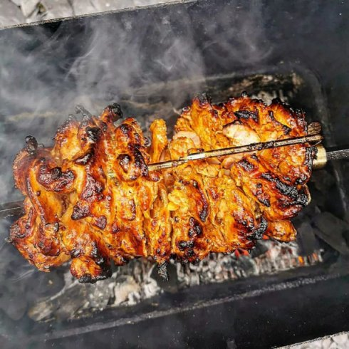

The Kellybab

The Kellybab
The Kellybab is a recipe that was published by a lady called Kelly Bramill. It’s become a bit of a go to by the UK BBQ community.
This is a stunning recipe and it’s not spicy so it’s perfect for kids. You can add chilli sauce of course and I do.
Serve this in home made pittas with shredded white cabbage, onion, lettuce, tomato and some tzatziki.
Ingredients
- 1.8kg boneless chicken thighs
- 3 tbsp tomato puree
- 4 garlic cloves, minced
- Zest and juice of two lemons
- 2 tsp onion granules
- 2 tsp ground cumin
- 1/2 tsp ground allspice
- 1 tbsp fresh thyme, finely chopped
- 3tsp salt
- 2 tsp black pepper
- 8 tbsp olive oil
Method
To marinate the chicken
- Place the chicken in a large bowl and, in a separate bowl, mix the rest of the ingredients together really well.
Don’t worry about the amount of oil. Its purely there for marinating purposes and won’t all end up in the finished dish.
- Pour the marinade over the chicken thighs and mix everything together thoroughly. You want every bit of chicken smothered in the paste.
- Leave to marinade for at least a couple of hours, overnight is best.